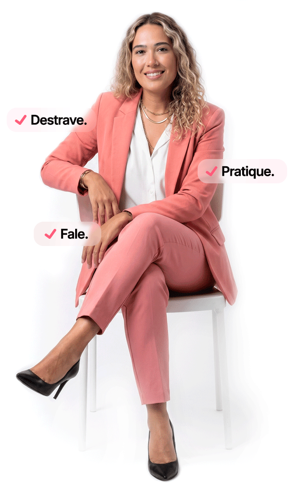

Inglês que conecta
Aprenda com foco em comunicação real, intenção e confiança.
Um caminho mais claro para incluir o inglês na sua rotina, perder o medo de errar e transformar estudo em comunicação de verdade.

Uma experiência acolhedora, profissional e clara para quem quer destravar a fala e construir constância.
A Speak Up foi pensada para quem quer sair do bloqueio e construir uma relação mais leve e consistente com o inglês.
Aprenda com foco em comunicação real, intenção e confiança.
Destrave sua fala sem a pressão de precisar estar perfeito para começar.
Pratique o inglês de forma aplicável ao seu dia a dia, com mais naturalidade.
Tenha clareza sobre seu momento, sua rotina e o próximo passo ideal.
A proposta da Speak Up une prática orientada, constância e direcionamento. O foco não é estudar mais por estudar, e sim evoluir de forma perceptível, com mais segurança para entender, responder e se expressar.
O inglês entra no seu dia de forma viável, sem depender de um cenário perfeito para acontecer.
Você pratica para falar com mais intenção, confiança e menos autocobrança.
Seu momento, sua rotina e seu objetivo orientam a jornada certa desde o começo.
O formato é pensado para combinar com seu ritmo e com a forma como você aprende melhor.
Leveza não significa superficialidade. Aqui, o processo tem direção, método e cuidado.
O inglês deixa de ser distante e passa a participar da sua rotina e dos seus planos reais.
Diagnóstico incluído Sem compromisso
Mesmo que ainda não fale tudo o que quer, sua compreensão já está mais rápida e mais natural.
Você começou a testar frases, responder, repetir e tentar, mesmo sem sentir que está pronto.
Pequenos contatos frequentes com o idioma já fazem parte do seu dia e isso muda o jogo.
Para quem quer destravar a fala, voltar a ter ritmo ou criar uma relação mais leve com o inglês sem abrir mão de clareza e direção.
Para quem sente que entende, mas trava para falar.
Para quem já estudou, mas perdeu ritmo ou confiança.
Para quem quer voltar ao inglês com leveza e direção.
Para quem busca uma experiência mais humana e personalizada.
Para quem quer conciliar inglês com uma rotina corrida.
“Hoje eu me sinto mais segura para falar. Parei de esperar perfeição para começar a me expressar.”
“Finalmente consegui colocar o inglês na minha rotina de um jeito leve e possível.”
“A metodologia me ajudou a praticar sem medo e a perceber evolução de verdade.”
“Em 3 semanas já conseguia responder e-mails em inglês sem aquele frio na barriga de antes.”
“O diagnóstico inicial foi certeiro. Entendi exatamente onde eu estava e para onde ir.”
“Sempre tive medo de errar. Aqui aprendi que errar faz parte e isso mudou tudo para mim.”
“As aulas se encaixam na minha rotina corrida. 20 minutos por dia fazem diferença de verdade.”
“Me sinto muito mais confiante para falar em reuniões internacionais. Era meu maior bloqueio.”
“Nunca imaginei que aprenderia inglês de forma tão natural. A abordagem é completamente diferente.”
“Consegui fazer minha primeira apresentação em inglês depois de apenas um mês. Emocionante.”
Não. A proposta atende desde quem está começando até quem já estudou e quer destravar.
Sim. O speaking é uma parte central da experiência, sempre com direção e contexto.
Por meio do quiz de diagnóstico, entendemos seu nível, objetivo, rotina e preferência.
Sim. O quiz ajuda a mapear qual formato faz mais sentido para o seu momento.
Comece com clareza, leveza e um plano mais alinhado com a sua rotina.
Fazer meu diagnóstico agora